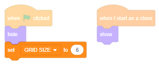

Introduction
In this module we will make a game in which the player has to memorize a random tile pattern.
Grid of tiles
Start from an empty Scratch project (rpf.io/scratch-new — remember to delete the cat sprite).
Paint a new sprite, named 'Tile'. Zoom in until the chequered background becomes large, then select the Rectangle tool, change the Fill colour to light green, the Outline thickness to 0, and draw a square, 4 chequered tiles by 4 chequered tiles. The size is important.

Name the costume 'normal'. The name is important.
On the Code tab, add the usual hide-template-show-clone scripts.
We're going to use our tile to create a grid of many tiles. Create a variable (for all sprites) called GRID SIZE to store the size of the grid. Create two more variables (for all sprites) called X and Y — we'll use these to position our tiles. Hide them from the stage by unchecking their checkboxes.
Why do you think these variables' letters are all uppercase?
Good guess — from this module onwards we'll use this 'convention', i.e. this way of doing things: uppercase when a variable is 'for all sprites', lowercase when it's for 'this sprite only'. It will make our code easier to read. (Note: other projects you see on Scratch might not use this convention.)
When the green flag is clicked, set GRID SIZE to 6.
Now we need to move the template tile upwards, repeatedly, cloning it as it goes, until it reaches the top of the grid. Then, it should drop down and to the right, and start making another column of cloned tiles. And so on, until we have a full grid.
We do this with nested repeat loops. Start off by setting X and Y to zero, then repeatedly position the template, clone it, then increase Y by 20:
Click the green flag. What happens?
Now we nest that loop inside another loop which will increase X by 20. Don't zero X inside this loop, we want X to keep increasing so the columns keep moving right, but do zero Y, we want each column's first tile to be at the bottom:
Click the green flag. What happens?
Good. Notice how it takes about a second to create all the tiles? Let's fix that.
My Blocks
In the 'My Blocks' section click the 'Make a Block' button. Type 'Make grid' as the block name and click 'Ok'. You should see a new 'define' block appear in your code area, and a new code block appear in the list of code blocks:
Click the red stop sign to clear the stage. The click the Make grid code block. What happens?
When Make grid runs, all the blocks snapped under its definition run. Right now, there are no blocks snapped under its definition, so nothing happens.
Drag the nested loops we just added and snap them under the definition:
Click the Make grid code block. What happens?
My Blocks are useful for giving a name to a group of code blocks that do a single thing. You can then run all those code blocks by simply running the one Block.
As your Scratch projects get larger, it's much easier to think about a few well-named Blocks, rather than hundreds of repeat loops / variable setters / etc.
But there's another reason to use a Block. Right-click on Make grid and click 'Edit':
Check the 'Run without screen refresh' checkbox and click 'OK'.
Click the red stop sign to clear the stage then click the Make grid code block. What happens?
Previously, we saw the grid of tiles being created, tile by tile, because Scratch refreshed the screen for us each time round the repeat loops. Now that we're using a Block without screen refresh, the loops run super quickly (screen refreshes slow things down) and we get a single screen refresh at the end showing us that all the tiles have been created.
Snap a Make grid under the set GRID SIZE to 6 so that a grid is made whenever the green flag is clicked.
Does your code look like this?
Let's fix one more problem — the grid is currently positioned in the top right corner of the screen (filling a space with a width and height of 20 × GRID SIZE):
It would look better if it were centred. Fix that by moving each tile left by half the width, and down by half the height (i.e. 10 × GRID SIZE):
Does your code look like this?
Click the green flag and check that the grid is now centred nicely. Try setting GRID SIZE to 12 and confirm that the grid is still nicely centred. Set it back to 6 when you're done.
Random tile patterns
Click on the Costume tab and duplicate the 'normal' costume until there are 5 identical costumes. Name them
- normal
- normal hidden
- special
- special hidden
- wrong
Select the costume named 'special', and use the Select tool to change the Fill colour to a strong green. Then select the costume named 'wrong', and use the Select tool to change the Fill colour to bright red:
Switch to the Code tab, and add some code to randomly pick either the normal or the special costume:
Click the green flag a few times. What happens?
Our game will test the player's ability to remember each random tile pattern. So we'll show the pattern for a second, then hide it. Add the following code:
Click the green flag a few times and check that a pattern is shown briefly then hidden. Why does the next costume block hide the pattern?
That's right. Now it's time to turn this into a game.
Losing
Players will win this game by clicking on all the special tiles that have been hidden; if they click a normal tile, they will lose.
Add a when this sprite clicked and snap two if then blocks underneath. We need to detect whether this tile is a 'special hidden' tile or a 'normal hidden' tile, and we do that with the below code (noting that you need to grab a costume number block from the 'Looks' section and change 'number' to 'name'):
(Note: our code area is getting so full that I'm only showing the new script here.)
If the clicked tile is a 'special hidden' tile, switch it to 'special' so the player can see that they got it right. If 'normal hidden', switch it to 'wrong':
Click the green flag, then click some special tiles and some normal tiles. What happens?
If the player clicks a wrong tile, it should be game over, i.e. no more clicking allowed. It would also be nice to show them where the special tiles actually were.
Let's broadcast a message called 'Game over' when a normal tile is clicked:
Add a when I receive Game over block. Remember that one of the cloned tiles will broadcast this event, but every tile will receive it. We only want to show the special hidden tiles, so use an if then block to show only these:
Click the green flag then click a normal tile. What happens?
Good — it's now clear when the player loses. But it's nice to have some kind of 'reward' when the player wins...
Winning
Before we can reward the player for winning, we need to know when they've won. Note: they don't win after clicking a special tile; they win after clicking all the special tiles.
We could use a variable to count the number of special tiles, and a second variable to count how many special tiles have been found. Or, we could use one variable to count the number of special tiles yet to be found. Which do you think is better?
There are usually several ways to solve a problem in Scratch and, in general, the ways that use fewer blocks and fewer variables are considered better, or more 'elegant'.
Make a variable (for all sprites) called NUM HIDDEN SPECIALS. (You could name it 'NUMBER OF HIDDEN SPECIALS' if you want, but I'll use a common abbreviation.)
Insert a block right at the start of the 'Make grid' definition that sets NUM HIDDEN SPECIALS to zero. Then, whenever we clone a special tile, increase that variable by one:
Next, decrease NUM HIDDEN SPECIALS whenever a special tile is found. Then, if there are none left to find, the player has won — broadcast the message 'Game over':
Let's make the grid shake when the game is over. Drag a repeat 10 onto the code area and nest a move 10 steps and a move -10 steps inside:
Click this script to run it. What happens?
There are a couple of reasons why. Firstly, it was the template that ran that script, and the template is currently hidden. Show the template and run the script again.
Click the 'Show' icon.
Why did nothing happen this time?
Add a wait 0 seconds block between the two move blocks.
You might think that waiting for zero seconds won't do anything. Run the script. What happens?
That little wait 0 seconds block forced the screen to refresh between the back and forth movements, so we saw the shake.
Snap that whole repeat loop onto the end of the when I receive Game over:
Click the green flag and play a game. Whether you win or lose, what happens at the end?
Great. Click the full screen button and play a few games.
Next steps
Save your game. See if you can make it better.
Is it more fun with a larger grid size, or a smaller one?
Is it easier if you show the pattern for longer than one second before hiding it?
What ideas can you come up with?
What did you think of this module?
I didn't like it

It was OK

I loved it